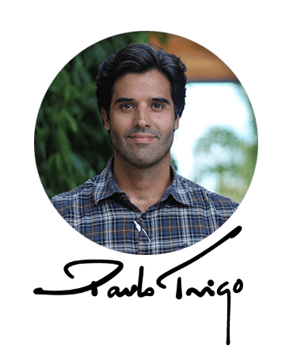
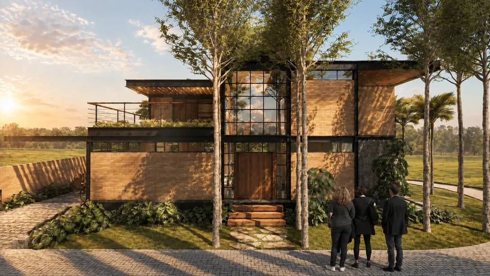
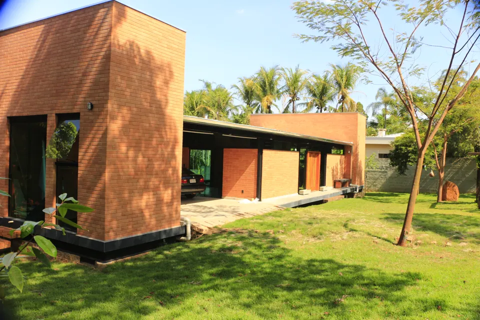
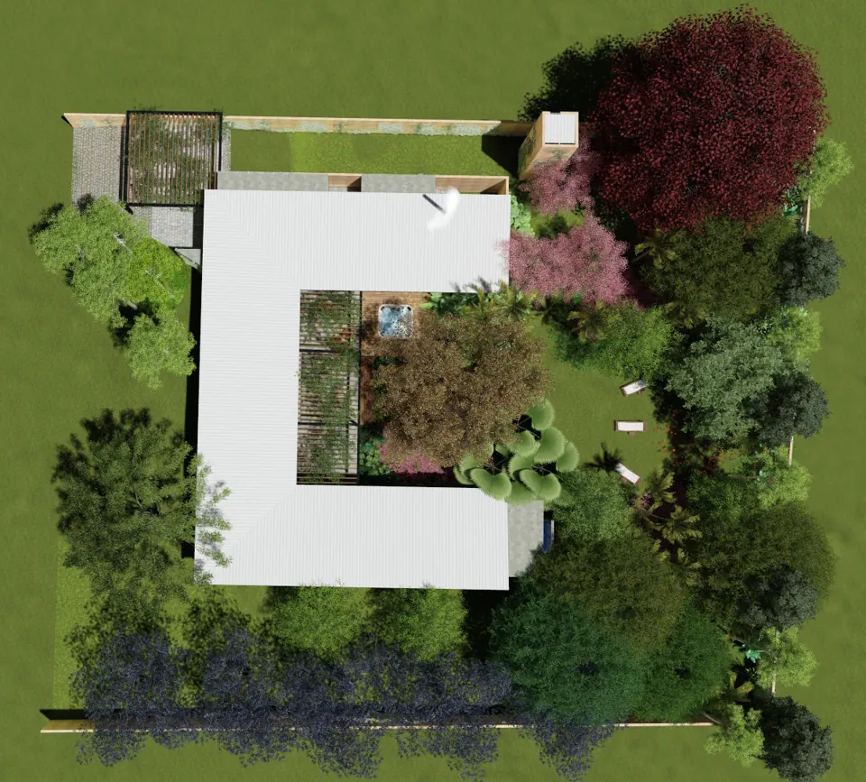
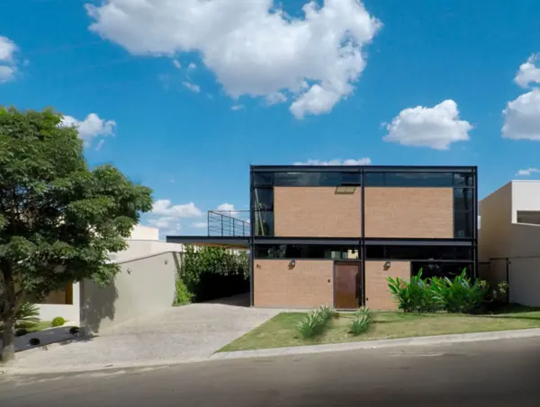
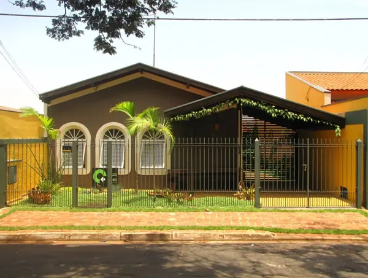
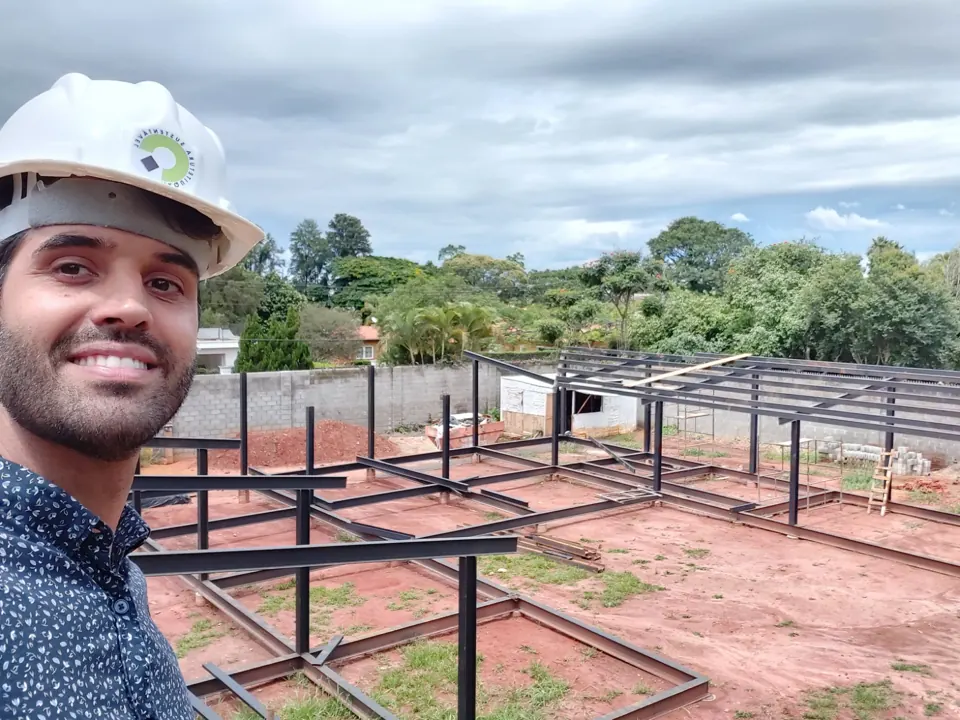
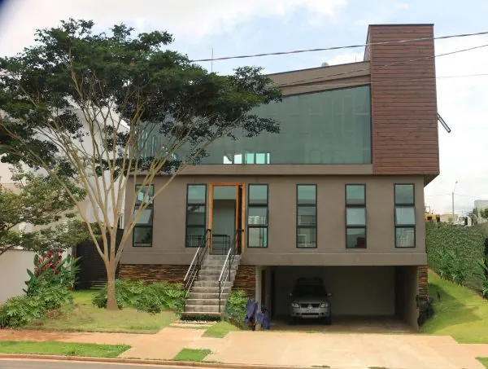

A arquitetura da felicidade
Arquitetura sustentável e paisagismo em Limeira.
Construímos pelo mesmo motivo que escrevemos: para registrar o que é importante para nós.
Da obra para o projeto, não o contrário.
A TETO é um escritório de arquitetura sustentável em Limeira (SP), coordenado pelo arquiteto e urbanista Paulo Trigo, especialista em Meio Ambiente e Desenvolvimento Sustentável.
Paulo começou no canteiro aos 18 anos, como técnico em edificações. Essa vivência orienta cada projeto: implantação correta no terreno, modulação dos materiais e técnicas que fazem sentido para o lugar. O cliente não precisa se preocupar em compatibilizar arquitetura e construção.

- 2000 Técnico em Edificações pelo COTIL-UNICAMP. Início no canteiro.
- USP Arquitetura e Urbanismo. Pesquisa de bloco com escória premiada no I Desafio Concreto Eficiente.
- 2007 Intercâmbio na ENSA Paris-Belleville e trabalho com Nicolas Bual, em Paris.
- 2010 Especialização em Meio Ambiente na UNICAMP. Fundação da TETO.
- 2013 Professor na FAAL: sistemas construtivos, sustentabilidade e paisagismo.
- 2017 Secretário de Meio Ambiente e Agricultura de Limeira, até 2020.
Projetos
-
Casa T+J
Porto Real. Estrutura metálica e tijolo aparente.
-
Casa Prada
Empena de tijolo entre as árvores.
-

Casa Bela Vista
Caixilho de ferro de dois pavimentos.
-
Casa J.E.
Itapema. Madeira, pedra e trepadeiras.
-

Projeto MCMV
Habitação que cresce em etapas.
-

Casa A+E
Pátio central e paisagismo.
-

Casa A+M
Volume de tijolo e terraço.
-

Reforma do escritório
Fachada, pérgola e trepadeiras.
Arquitetura e natureza são indissociáveis.
Do primeiro traço à última muda plantada.
-
Projetos residenciais e comerciais
Modulação e compatibilização entre materiais e sistemas para reduzir o desperdício: tijolo ecológico, blocos estruturais cerâmicos e de concreto, estrutura metálica e de madeira.
-
Paisagismo
Todo projeto inclui o macro-paisagismo: árvores que dão sombra, atraem a avifauna e completam a arquitetura. O paisagismo de canteiro, com plantas ornamentais, pode ser contratado à parte.
-
Direção técnica de obra
O arquiteto visita o canteiro com regularidade e orienta equipes e fornecedores para que a obra siga o projeto, sem desperdício e sem improviso.
-
Sistemas sustentáveis
Energia solar fotovoltaica, cisterna para água de chuva e tratamento de esgoto doméstico por plantas, com as melhores empresas do ramo.
-
Mobiliário sob medida
Móveis e objetos em madeira de demolição, ferro e materiais escolhidos para unir arquitetura e decoração.
-
Palestras e workshops
Meio ambiente, arquitetura sustentável e paisagismo. Já em UEL, SENAC, ESALQ-USP e Jardim Botânico Plantarum.
Primeiro o projeto. Depois a tecnologia.
Pedir orçamento-
Experiência aplicada à prática
Cada obra é exclusiva. Anos de canteiro transformam conceito em casa construída, com conexão real com a natureza.
-
Um estilo de vida, não só um conceito
A arquitetura da felicidade orienta todo projeto: ambientes que trazem conexão, bem-estar e criatividade para quem mora.
-
Técnicas que atravessam gerações
Resgatamos técnicas consagradas de desempenho bioclimático. A tecnologia complementa a arquitetura; não corrige um projeto mal feito.
-
Aprendizado constante
Ensino, pesquisa e troca de experiências para que mais gente viva de outra forma com o ambiente.
De olho nas obras
-

Casa T+J, Porto Real
Casa compacta para um jovem casal: bloco social com pé-direito duplo, bloco íntimo e espaço para ampliar no futuro.
-
Casa MCMV
Construída em etapas: primeiro o bloco social, que cresce conforme a família precisa de mais espaço.
-

Casa Alphaville, Piracicaba
Construção sustentável em wood frame, com colaboração de Leandro Menato e Carolina Ricce.
Quem vive os projetos
-
“Quando chego em casa tenho a sensação de amplitude, através da integração entre construção e jardins. (…) Parece que estamos viajando, é uma sensação de felicidade mesmo!”
Eng. Alex Aguilera, cliente -
“O resultado foi fantástico! Tenho o prazer de sentir diferentes perfumes a cada época do ano, além da beleza das flores e dos pássaros que nos visitam.”
Dra. Adriana Sato, cliente -
“Os visitantes realmente se sentem bem. (…) Em termos de projeto de arquitetura e ambiente, você acertou.”
Jean François Hardouin, diretor da Enza Zaden -
“Quando volto de viagem, abro a porta, tiro os sapatos, piso no bonito e fresco assoalho de madeira (…) sinto o cheiro de casa e penso com o coração… não há melhor lugar no mundo para estar!”
Estefânia Buzolin, cliente -
“Criou uma casa diferente das convencionais e totalmente com as nossas características! A casa está dividida em 2 blocos, conectado por um corredor aberto que, integrado à natureza, criará uma atmosfera de paz e felicidade.”
Itaraju e Sueli, clientes
Vamos conversar sobre o seu terreno?
- (19) 98808-2306
- Telefone
- (19) 3702-8400
- arq.teto.paulo@gmail.com
- Escritório
- Rua Dário Prada, 348, Real Parque, Limeira (SP)